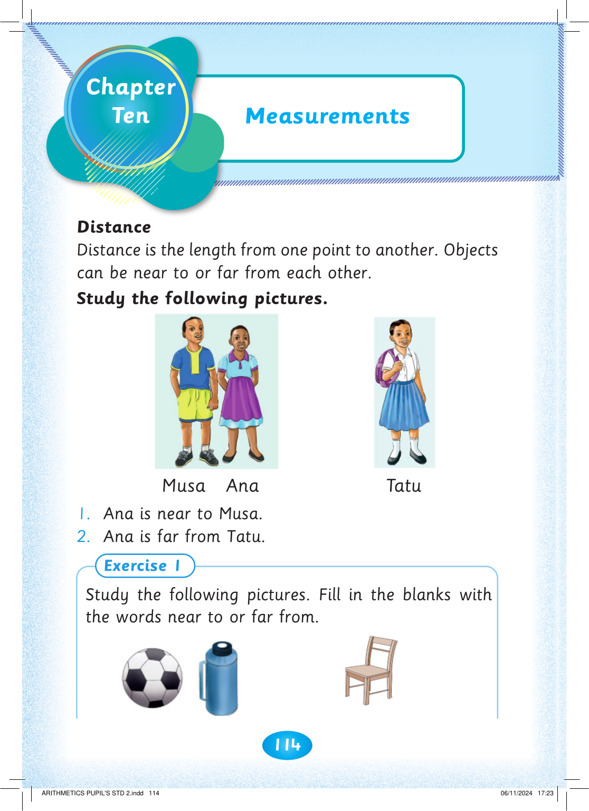
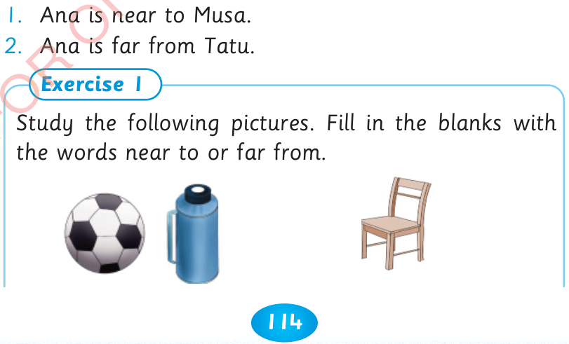

114

Distance
Distance is the length from one point to another. Objects can be near to or far from each other.
Study the following pictures.
Musa Ana Tatu
1. Ana is near to Musa.
2. Ana is far from Tatu.
Exercise 1
Study the following pictures. Fill in the blanks with the words near to or far from.
Measurements


Chapter
Ten


ARITHMETICS PUPIL'S STD 2.indd 114
06/11/2024 17:23